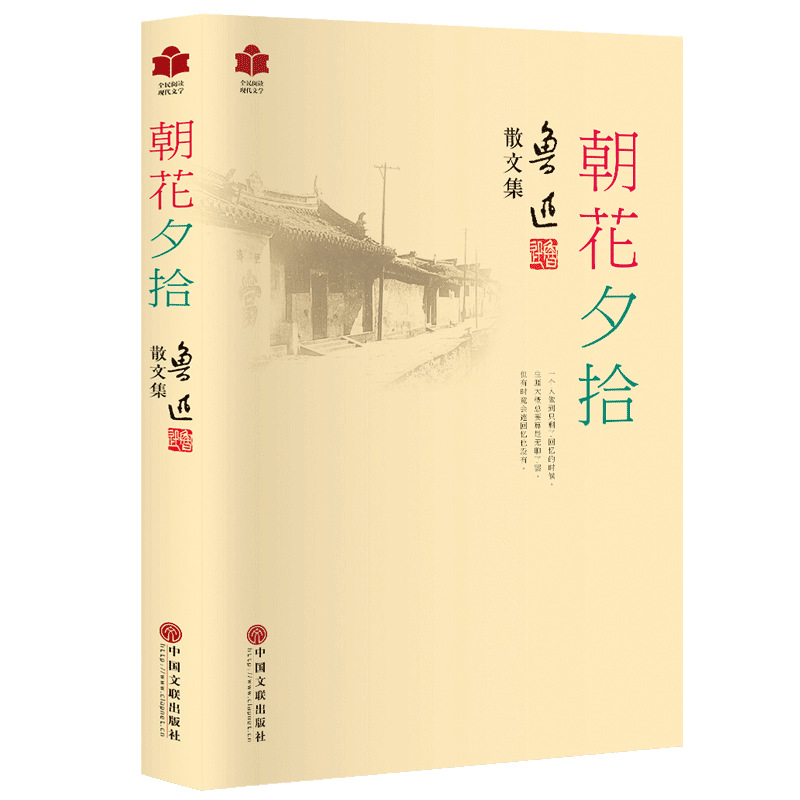

喜欢的书籍 ：《朝花夕拾》
简介：《朝花夕拾》里作者鲁迅用夹叙夹议的方法，以青少年时代的生活经历为线索，真实生动地叙写了自己从农村到城镇，从家庭到社会，从国内到国外的一组生活经历，抒发了对往昔亲友和师长的怀念之情，同时也对旧势力、旧文化进行了嘲讽和抨击。
简介：《朝花夕拾》里作者鲁迅用夹叙夹议的方法，以青少年时代的生活经历为线索，真实生动地叙写了自己从农村到城镇，从家庭到社会，从国内到国外的一组生活经历，抒发了对往昔亲友和师长的怀念之情，同时也对旧势力、旧文化进行了嘲讽和抨击。